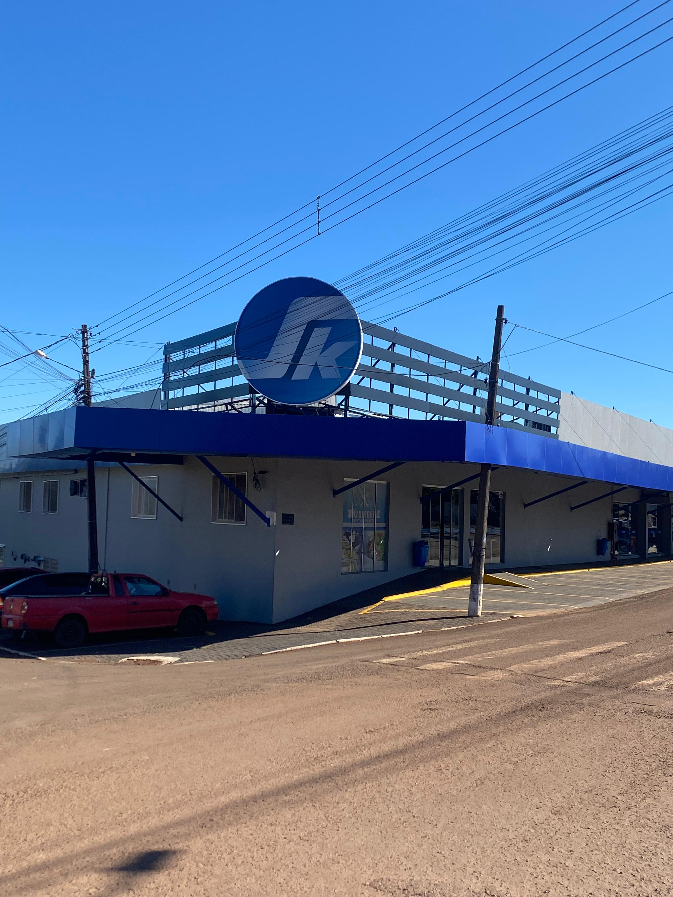
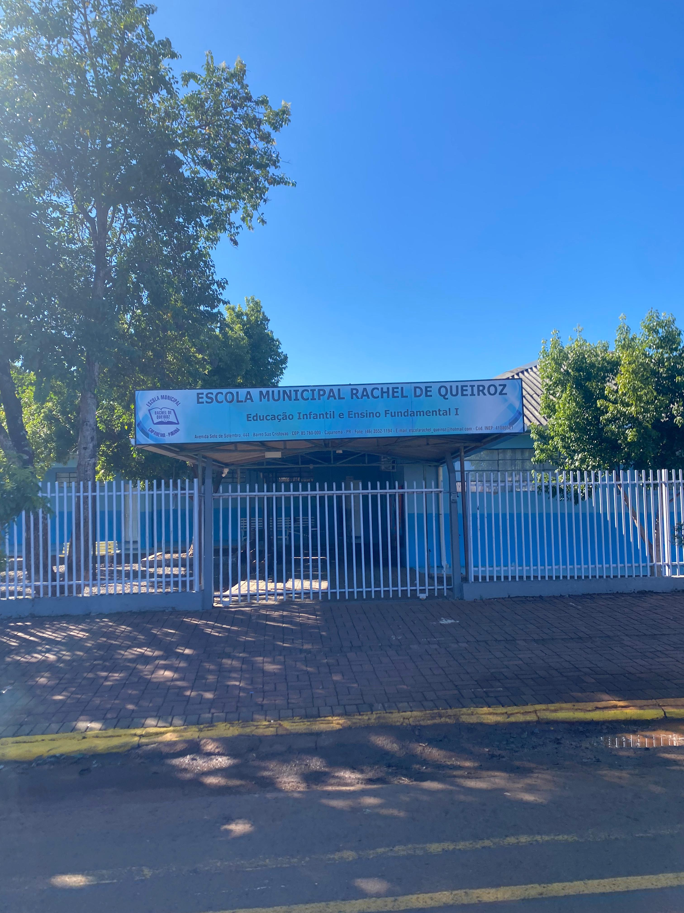

Encontre aqui o melhor lugar para se viver!
Qualidade, variedade e os melhores preços da região.
Imagens do Bairro
Colegio Estadual São Cristovão
Colegio tradicional do bairro, com grande impacto educacional.
Ver localização

Kraemer Supermercado
Supermercado local que atende as necessidades da comunidade.
Ver localização

Escola Raquel de Queiroz
Escola tradicional do bairro, com grande impacto educacional.
Ver localizaçãoPrecisa de ajuda para encontrar o melhor lugar para construir sua casa?
Entre em contato com nossos especialistas e receba uma localização e um orçamento personalizado.
Fale Conosco